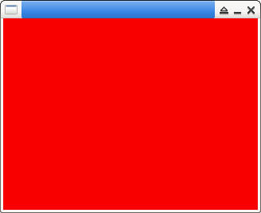

參考資訊：
https://www.libsdl.org/release/SDL-1.2.15/docs/html/index.html
main.c
#include <stdio.h>
#include <stdlib.h>
#include <SDL.h>
int main(int argc, char **args)
{
SDL_Event evt = { 0 };
SDL_Surface *screen = NULL;
SDL_Init(SDL_INIT_VIDEO);
screen = SDL_SetVideoMode(320, 240, 16, SDL_HWSURFACE);
SDL_FillRect(screen, &screen->clip_rect, SDL_MapRGB(screen->format, 0xff, 0x00, 0x00));
SDL_Flip(screen);
while (1) {
if (SDL_PollEvent(&evt)) {
if (evt.type == SDL_QUIT) {
break;
}
}
SDL_Delay(100);
}
SDL_Quit();
return 0;
}
編譯、執行
$ gcc main.c -o main -lSDL -lSDL_gfx -I/usr/include/SDL $ ./main
